Evann BERTHILDE - Terminale Bac Pro CIEL - 2026-2à27
Accueil
J'ai effectué ma PFMP du 21 spetembre 2026 au 9 octobre 2026 chez la CINOR, à Saint-Denis
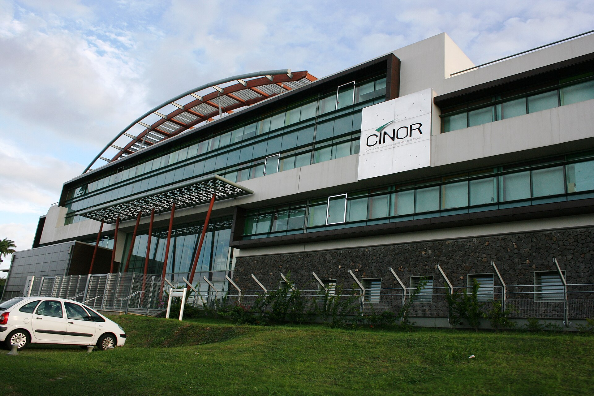
Fig. 1 - Les locaux de l'entreprise
Présentation de l'entreprise
Raison sociale
Communuaté Intercommunale du Nord de la Réunion
Adresse
Saint-Denis, Sainte-Marie et Sainte-Suzanne
Secteur
Collectivité Territoriale
Effectif
Entre 199 et 499 salariés et agents
Tuteur
Mr.BARBE Jean-Yann, Technicien informatique à la CINOR
- La CINOR, Terre d'avenir -
Présentation générale de la C.I.N.O.R
La CINOR est un établissement public de coopération intercommunale qui regroupe les communes de Saint-Denis, Sainte-Marie et Sainte-Suzanne.
Sa mission principale est de gérer et de développer des services publics destinés aux habitants de ces communes.
La CINOR intervient dans plusieurs domaines, notamment la gestion des déchets, l'aménagement du territoire, les transports, le développement économique, l'environnement, l'assainissement, ainsi que les services numériques.
Elle met en œuvre des projets visant à améliorer la qualité de vie des habitants et à accompagner le développement du territoire.
Les principaux usagers de la CINOR sont les habitants des communes membres, mais également les entreprises, les associations et les collectivités qui bénéficient des différents services proposés. Contrairement à une entreprise privée, la CINOR exerce une mission de service public et son objectif est de répondre aux besoins de la population.
J'ai réalisé mon stage au sein du service informatique. Ce service est chargé de gérer les équipements informatiques (ordinateurs, imprimantes, serveurs, périphériques de bureautique, etc...), les réseaux, la cybersécurité et l'assistance aux utilisateurs.
Il veille au bon fonctionnement du système d'information afin que les différents services de la collectivité puissent travailler dans de bonnes conditions.
La communauté intercommunale du nord de La Réunion est créée le 1er janvier 2001.
Elle succède à une communauté de communes couvrant le même territoire créée le 22 octobre 1997.
La communauté d'agglomération est composée des 3 communes suivantes :
Nom
Code INSEE
Gentilé
Superficie (km²)
Population (dernière pop. de réf.)
Densité (hab./km²)
Saint-Denis
97411
Dionysiens
142,79
155 634 (2023)
1 090
Sainte-marie
97418
Sainte-Mariens
87,21
37 093 (2023)
425
Sainte-Suzanne
97420
Sainte-Suzannois
57,84
25 551 (2023)
442
Son Historique
Tout d'abord, il faut savoir que la C.I.N.O.R a une organisation bien spécifique.
Le conseil communautaire de la communauté d'agglomération se compose de 64 conseillers, representant chacune les communes membres et élus pour une durée de six ans. Parmi les communes membres, on en retouve 3: Saint-Denis, Sainte-Marie et Sainte-Suzanne.
Voici un tableau qui explique la répartition des conseillers du conseil communautaire sur les 3 communes.
Nombre de conseillers
Communes
32
Saint-Denis
19
Sainte-Marie
13
Sainte-Suzanne
Son Organisation et sa Présidence
Pour son organisation, la C.I.N.O.R est partagé en pôle comme ci-dessous.
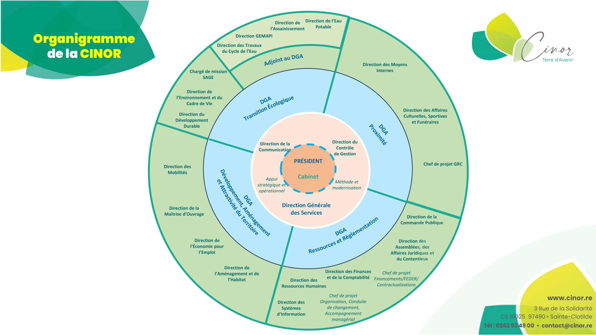
source: site CINOR
Concernant sa direction, la C.I.N.O.R a déjà vu passer de nombreux présidents et présidentes. Voici un tableau qui met en avant tous les présidents de la C.I.N.O.R de 2000 à 2020.
Liste président de la CINOR
Période
Identité
Etiquette
Qualité
Janvier 2000
2002
Maurice GIRONCEL
PCR
Maire de Sainte-Suzanne (1993 -> 2009)
2002
Juillet 2004
René-Paul VICTORIA
UMP
Maire de Saint-Denis (2001 -> 2008)
Juilett 2004
Juillet 2006
Jean-Louis LAGOURGUE
DVD
Maire de Sainte-Marie (1990 -> 2018)
Juillet 2006
Juillet 2008
Maurice GIRONCEL
PCR
Maire de Sainte-Suzanne (1993 -> 2009)
Juillet 2008
Juillet 2010
Ericka BAREIGTS
PS
2e adjointe au maire de Saint-Denis (2008 -> 2012)
Juillet 2010
Juillet 2012
Jean-Louis LAGOURGUE
NC
Maire de Sainte-Marie (1990 -> 2018)
Juillet 2012
Juillet 2014
Maurice GIRONCEL
PCR
Maire de Sainte-Suzanne (2012 -> )
Juillet 2014
Juillet 2020
Gérald Maillot
PS puis DVG
3e adjoint au maire de Saint-Denis
Juillet 2020
Juillet 2026
Maurice GIRONCEL
PCR
Maire de Sainte-Suzanne (2012 ->)
Juillet 2026
en cours
Jacques LOWINSKY
DVG
Adjoint au maire de Saint-Denis
L'actuel président de la C.I.N.O.R est Mr. LOWINSKY Jacques.
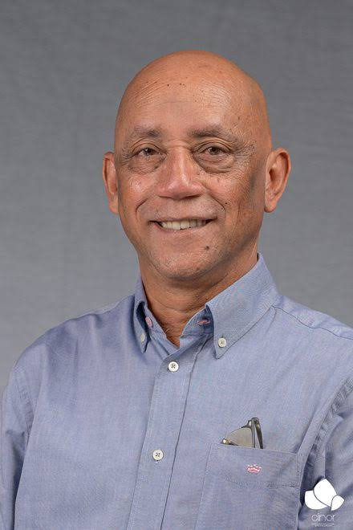
Son secteur d'activités
La C.I.N.O.R oeuvre dans plusieurs dommaines, tels que:
Le Développement économique
Aménagement de l'espace communautaire
L'équilibre social de l'habitat
La politique de la ville
la gestion des milieux aquatiques et prévention des inondations
L'accueil des gens du voyage
La collecte des déchets ménagers et assimilés
La création ou aménagement et l'entretien de voirie d'intérêt communautaire, la création ou l'aménagement et la gestion de parcs de stationnement d'intérêt communautaire
L'assainissement des eaux usées
La protection et mise en valeur de l'environnement et du cadre de vie
La construction, l'aménagement, l'entretien et la gestion d'équipements culturels et sportifs d'intérêt communautaire
Les affaires funéraires
La coopération décentralisée
La restauration scolaire
La lutte contre l'errance animale
La mutualisation des services avec les communes membres
A bois-de-nèfles, on peut voir tous les jours le travail que la C.I.N.O.R fourni pour nous, la commune. On voit bien cela notamment avec le téléphérique "Papang" ou bien encore la déchetterie du Moufia.
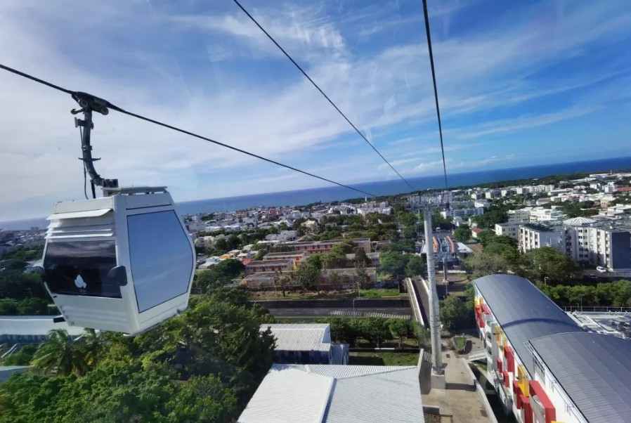
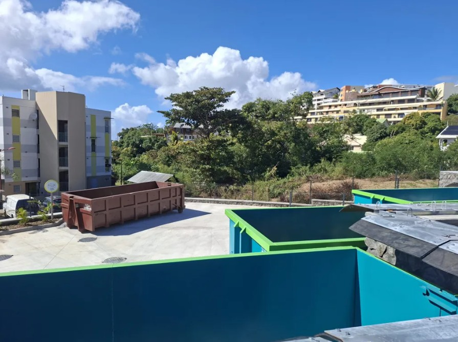
Quelques chiffres clés
À l'image de l'Île de La Réunion, La CINOR est un territoire de vie, de talents et de compétences multiples, mais la CINOR, c'est aussi ça:
Superficie : 28 992 ha
Habitants : 207 487 habitants
Effectif : 304 agents
Création : 22 octobre 1997
Nombre d'entreprises : 8 382 (commerce et entreprises)
Nombre de conseillers Communautaires : 56
Date de transformation en Communauté d'Agglomération : 1er janvier 2001
Mes activités
Activité 1 - Orange BusinessTour
Contexte : Invitation à l'Orange BusinessTour 2026, à l'hôtel Mercure Croelia
C'est quoi ?
L'orange BusinessTour c'est un évènement sur invitation organisé par Orange Business, pour les entreprises et les professionnel. Il permet de présenter les nouvlles technologies et aussi de présenter de nouvelles solutions aux entreprises. Sur place, on retrouve pleins de stands avec chacun un service différent, autour de la thématique de la cybersécurité. L'édition 2026 a été réalisé au cours du mois d'octobre qui le mois de la cybersécurité.
Pourquoi ?
Cet évènement organisé par Orange Business est particulièrement intéressant pour les entreprises, car elles pourront mieux se renseigner sur les nouveautés au niveau des protections de leurs données par exemple, et donc elles seront moins vulnérables au cyber-attaques.
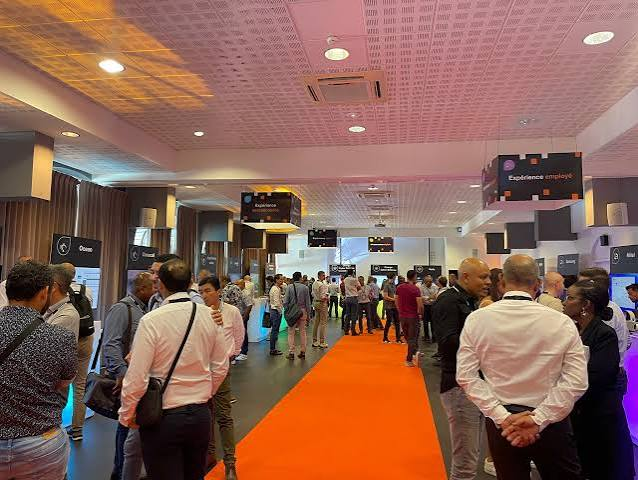
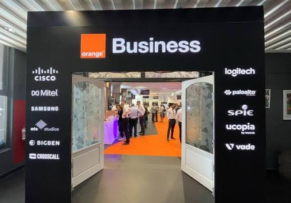
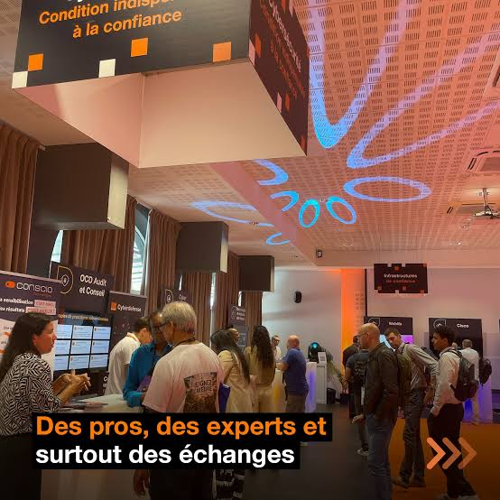
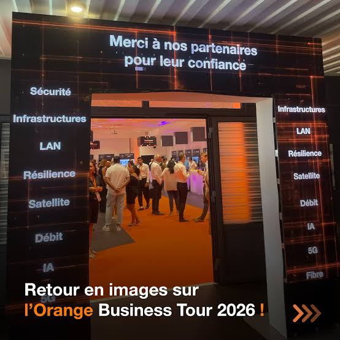
Mes découvertes
Lors de cet journée, j'ai pu découvrir énormément de métiers autour du monde de la cybersécurité, mais celui qui m'a le plus intéréssé, est celui de analyste CSIRT
La cybersécurité
C'est quoi un analyste CSIRT ?
Un analyste csirt, c'est un spécialiste en cybersécurité qui va être en charge de détecter, d'analyser et de gérer des incidents sur un système informatique. Lors d'une attaque, il va tout d'abord établir un diagnostic, ensuite il va analyser l'attaque pour pouvoir par la suite gérer le problème et le réparer.
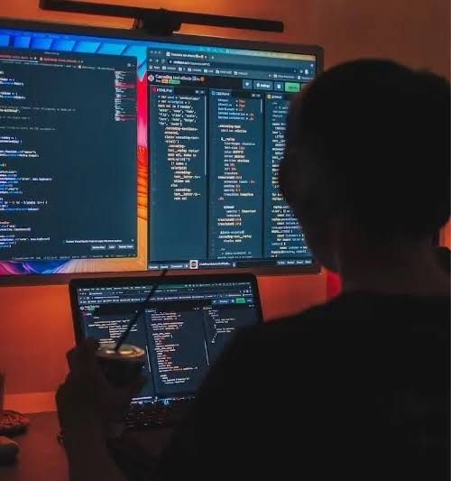
Analsyte CSIRT
Activité 2 — Mise en place d'une infrastructure Windows Server virtualisée
Contexte : Dans le cadre de mon stage, il m'a été demandé de mettre en place et de tester une petite infrastructure Windows Server virtualisée sous Proxmox.
L'objectif principal était d'ajouter un deuxième contrôleur de domaine à une infrastructure Active Directory existante afin d'assurer une meilleure disponibilité des services Active Directory et DNS.
La mission comprenait également la mise en place d'un serveur de fichiers, la création de groupes et d'utilisateurs dans Active Directory, la gestion des droits d'accès aux dossiers ainsi que la vérification du fonctionnement de la réplication entre les contrôleurs de domaine.
Matériel / Logiciels
Proxmox VE : plateforme utilisée pour créer et gérer les machines virtuelles.
Windows Server : système d'exploitation utilisé pour les serveurs.
Active Directory Domain Services (AD DS) : gestion du domaine, des utilisateurs et des groupes.
DNS Server : résolution des noms et réplication des informations DNS.
Serveur de fichiers Windows : stockage et partage des fichiers sur le réseau.
NTFS : gestion des permissions sur les fichiers et dossiers.
GPO : gestion centralisée des paramètres et des lecteurs réseau.
Invite de commandes / PowerShell : administration et vérification de l'infrastructure.
Repadmin : vérification de la réplication Active Directory.
Qwen 1.5 : modèle d'intelligence artificielle installé localement sur une machine virtuelle dans le cadre d'une extension personnelle du TP.
Architecture cible
L'infrastructure était composée de plusieurs machines virtuelles ayant chacune un rôle précis :
Serveur
Rôle
Exemple d'IP
DC01
Active Directory / DNS
10.21.50.40
DC02
Active Directory / DNS
10.21.50.45
FS01
Serveur de fichiers
10.21.50.30
DC01 : contrôleur de domaine principal (Active Directory) et serveur DNS.
DC02 : deuxième contrôleur de domaine avec Active Directory et DNS.
FS01 : serveur de fichiers membre du domaine.
POSTE01 : poste client utilisé pour des test des membres du domaine.
Démarche
1. Création et configuration de DC02
Création d'une nouvelle vm avec l'iso Windows Server sur Proxmox.
Modification du nom de cette vm -> DC02.
Configuration d'une adresse IP fixe. -> 10.21.50.45
Configuration de DC01 comme serveur DNS principal.
Ajout de DC02 au domaine Active Directory existant -> labstage.local
Redémarrage du serveur afin d'appliquer les modifications.
2. Installation du rôle Active Directory Domain Services
Ouverture du Gestionnaire de serveur.
Ajout du rôle Services de domaine Active Directory.
Installation du rôle et des fonctionnalités.
Installation Services de domaine Active Directory.
lancer "promouvoir ce serveur en contrôleur de domaine".
"Ajouter un contrôleur de domaine à un domaine existant".
Conservation les options du serveur DNS et du Catalogue global.
Définition du mot de passe DSRM.
Redémarrage du serveur à la fin de la promotion.
3. Vérification de la réplication Active Directory
Une fois DC02 configuré, j'ai vérifié que la réplication entre les deux contrôleurs de domaine fonctionnait correctement.
4. Mise en place du serveur de fichiers FS01 sur Proxmox
Création vm Windows Server sur PRoxmox
Modification du nom de cette vm -> FS01.
Configuration d'une adresse IP fixe. -> 10.21.50.30
Configuration du DNS vers les contrôleurs de domaine.
Ajout de FS01 au domaine Active Directory existant -> labstage.local
Création des groupes de sécurité dans Active Directory.
Création des utilisateurs de test.
Création des dossiers destinés au partage réseau.
Mise en place des partages réseau.
Configuration des permissions NTFS selon les groupes.
4. Mise en place du serveur de fichiers FS01
Création d'une nouvelle machine virtuelle Windows Server dans Proxmox.
Attribution du nom FS01.
Configuration d'une adresse IP fixe.
Joindre le serveur au domaine Active Directory -> labstage.local
Plusieurs groupes Active Directory ont été créés afin de gérer les droits. Des groupes tels que GG_DIRECTION, GG_COMPTA et GG_IT ont été utilisés pour attribuer les autorisations aux différents utilisateurs.
Les permissions ont ensuite été appliquées aux dossiers partagés du serveur FS01. Des tests ont été réalisés depuis le poste client pour vérifier que chaque utilisateur disposait uniquement des droits correspondant à son groupe.
Dossier
Groupe
Droits
Direction
GG_DIRECTION
Modification
Comptabilité
GG_COMPTA
Modification
Commun
utilisateur du domaine/td>
Modificationd>
Tous les dossiers
GG_IT
Contrôle total
5. Test des accès
Depuis POSTE01, effectuer des test avec différents comptes :
Compte
Direction
Comptabilité
Commun
direction02
Autorisé
Refusé
Autorisé
compta01
Refusé
Autorisé
Autorisé
admin01
Autorisé
Autorisé
Atuorisé
6. Installation d'une IA locale
Après avoir terminé le TP, j'ai décidé d'aller plus loin en essaynat dinstaller un modèle d'IA en local sur une vm. J'ai créé une machine virtuelle supplémentaire afin d'y installer localement le modèle d'intelligence artificielle "Qwen 1.5".
Cette extension m'a permis de découvrir le fonctionnement d'une IA exécutée localement, sans devoir passer par d'un service d'intelligence artificielle hébergé sur Internet ou bien une application sur notre smartphone.
Résultat
À la fin de la mission, l'infrastructure virtuelle était fonctionnelle.
Le deuxième contrôleur de domaine DC02 était correctement intégré au domaine
et la réplication Active Directory entre DC01 et DC02 pouvait être
vérifiée.
Le service DNS était également disponible sur les deux contrôleurs de domaine.
Le serveur FS01 était intégré au domaine et permettait de centraliser les
fichiers et de gérer les accès grâce aux groupes Active Directory et aux
permissions NTFS.
Enfin, en plus des objectifs initiaux, j'ai réussi à mettre en place
une machine virtuelle dédiée à l'exécution locale d'une IA artificielle Qwen 1.5.
Compétences mobilisées
Créer et administrer des machines virtuelles avec Proxmox.
Installer et configurer Windows Server.
Mettre en place et administrer Active Directory.
Configurer un contrôleur de domaine supplémentaire.
Configurer et vérifier un service DNS.
Comprendre et contrôler la réplication Active Directory.
Administrer les utilisateurs, groupes et unités d'organisation.
Mettre en place un serveur de fichiers.
Configurer des partages réseau.
Gérer les permissions NTFS.
Mettre en place des stratégies de groupe (GPO).
Configurer des lecteurs réseau automatiquement.
Effectuer des tests et diagnostiquer des problèmes réseau ou système.
Utiliser des outils d'administration tels que Repadmin.
Découvrir le déploiement et l'utilisation d'une intelligence artificielle locale.
Documenter une infrastructure informatique et rendre compte des résultats obtenus.
Activité 3 - interventions à la CINOR
Contexte : Réalisé les interventions dans les locaux de la CINOR, reçu via GLPI
C'est quoi ?
Dès que un agent ou bien un salarié de la CINOR rencontre un problème avec son ordinateur, ou bien n'importe quelle autre soucis informatique, il doit envoyé un ticket GLPI qui sera reçu par le technicien informatique. A la réception de ce ticket, il devra intervenir dans les plus brefs délais pour assurer le bon fonctionnement des équipements informatique de la CINOR
GLPI
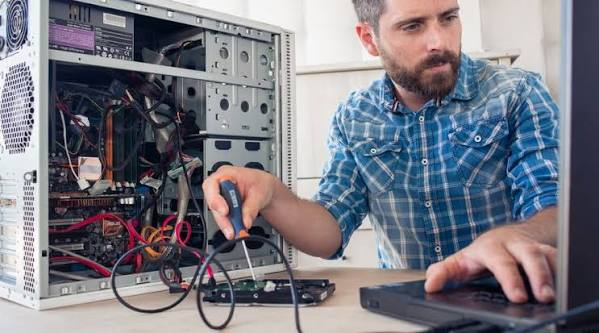
GLPI et un technicien informatique
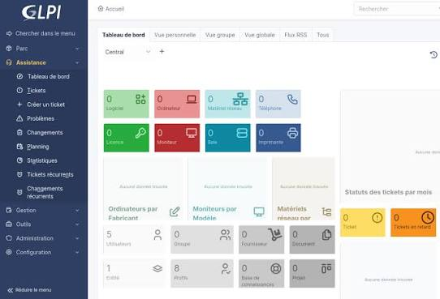
GLPI et un technicien informatiqueGLPI et un technicien informatique
Mes découvertes
Lors de cette mission, qui c'est répéter de nombreuses fois, j'ai pu découvrir la manière dont un technicien va procéder selon les différent problèmes. D'un problème à un autre, son approche va être différente. J'ai compris aussi que dans ce métier là, le modèle OSI compte énormément pour savoir par où commencer à intervenir.
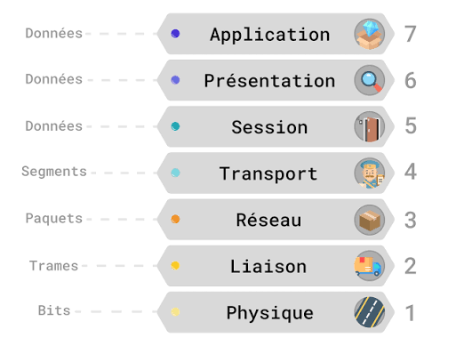
Le modèle OSI
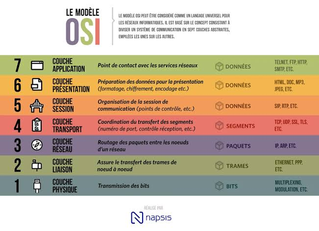
Le modèle OSI
Activité 4 - Visite sites de la CINOR
Contexte : Visite des différents sites de la Cinor
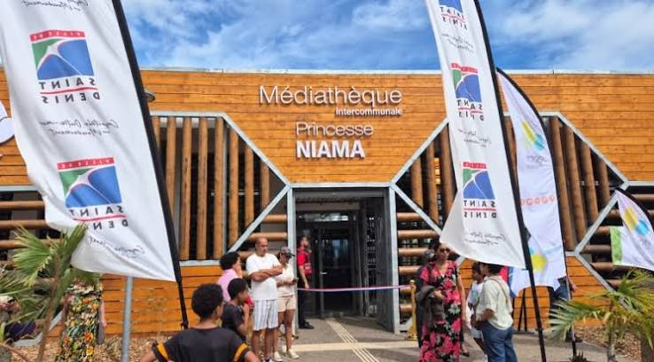
médiathèque chaudron
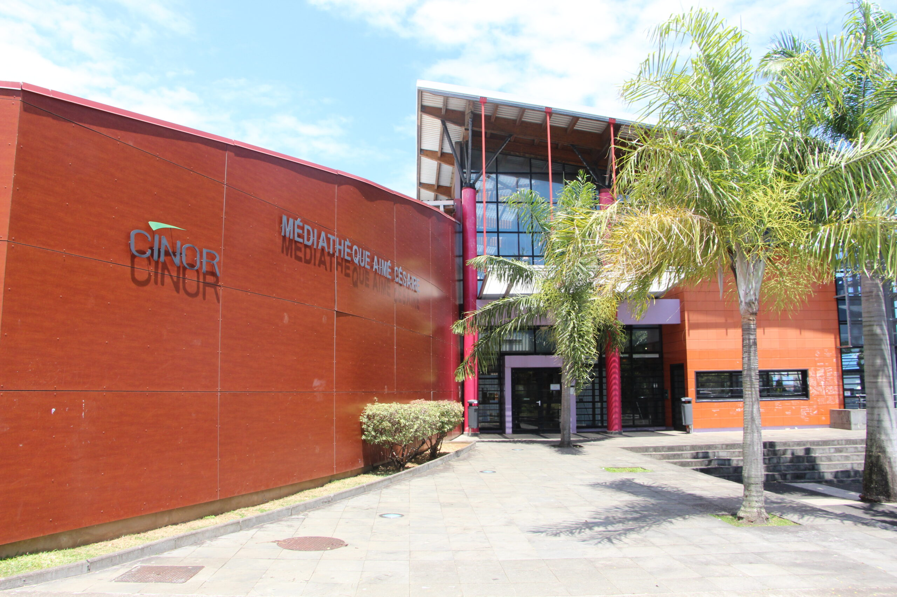
médiathèque Aimé Césaire
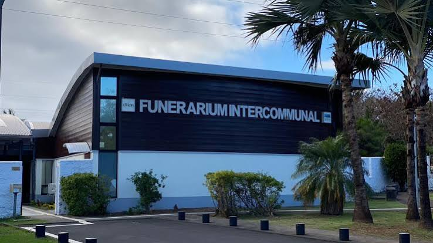
cimetière bois rouge
Mes découvertes
Lors de cette mission, j'ai pu découvrir de nombreux sites appartenant à la CINOR, ainsi que les équipes d'agents qui sont présentes sur place. J'ai aussi pu entrer dans la nouvlle médiathèque du chaundron avant son ouverture officielle.
Compétences
Voici un petit résumé de mes compétences mobilisés pendant ce stage à la CINOR.
Planning
Déroulement de la PFMP
Semaine
Dates
Activités principales
S1
Du 21 septembre 2026 au 25 septembre 2026
Interventions, Visite des sites et Travail sur Proxmox
S2
Du 28 septempbre 2026 au 02 octobre 2026
Orange BusinessTour, Travail sur Proxmox et Interventions
S3
Du 05 octobre 2026 au 09 octobre 2026
Interventions et Travail sur Proxmox
Mon bilan
Ce mois de stage au sein de la Direction du Service Informatique de la CINOR (Communauté Intercommunale du Nord de La Réunion) a été une expérience très enrichissante, pour moi et mon parcours scolaire.
Il m'a permis de découvrir le fonctionnement d'un service informatique au sein d'une collectivité territoriale et de mieux comprendre les différents métiers qui y sont exercés.
Au cours de ce stage, j'ai eu l'occasion de participer à diverses missions qui m'ont permis de mettre en pratique les connaissances acquises durant ma formation tout en développant de nouvelles compétences.
J'ai notamment découvert les méthodes de travail d'une équipe informatique, de l'importance de la communication avec les utilisateurs, ainsi que les bonnes pratiques en matière de maintenance et d'assistance technique.
Le fait d'être accompagné par un tuteur qui de plus est un technicien informatique, m'a permis de découvrir les interventions de proximité, la gestion des équipements et le support aux utilisateurs.
Au-delà des compétences techniques, ce stage m'a également permis de développer mon autonomie, mon sens de l'organisation, ma rigueur et ma capacité à travailler en équipe. Il m'a permis de mieux comprendre les responsabilités et les exigences du monde du travail.
Je tiens à remercier l'ensemble de l'équipe de la Direction du Service Informatique de la CINOR pour son accueil, sa disponibilité et sa bienveillance tout au long de ce mois de stage.
Je remercie tout particulièrement mon tuteur de stage pour le temps qu'il ma consacré, ses conseils, sa patience et les nombreuses connaissances qu'il a partagé avec moi. Son accompagnement m'a permis de progresser, de gagner en confiance et de vivre une expérience particulièrement formatrice.
Je souhaite aussi remercier le responsable SOC pour son aide apportée en complément de mon tuteur durant ce stage.
Enfin, je remercie la CINOR de m'avoir offert l'opportunité d'effectuer ce stage au sein de son service informatique.